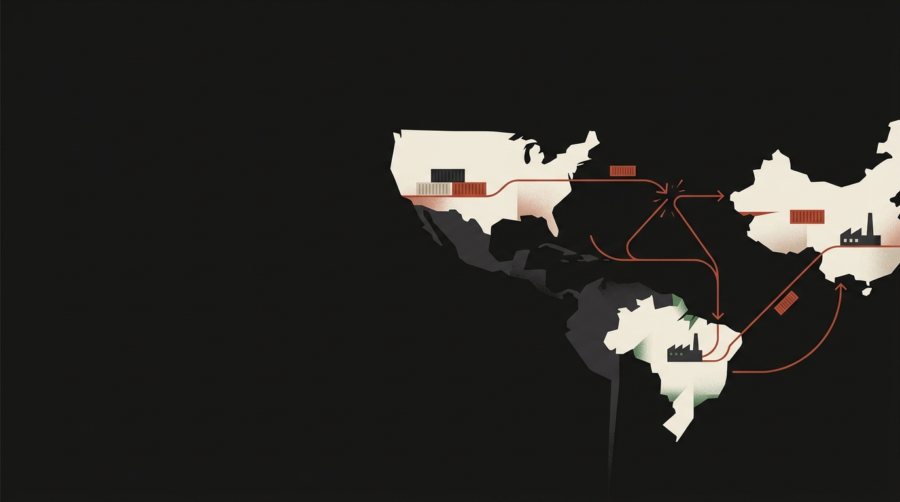

Geopolitical triads
Beyond Bilateral Exposure
This study examines how economic tensions between the United States and China are reshaping supply chains involving Brazil. It uses data analytics and company interviews to identify which products and industries are changing and how companies are responding. It also examines whether Brazil is developing a more strategic production role or becoming an intermediary exposed to greater geopolitical and trade risks.
